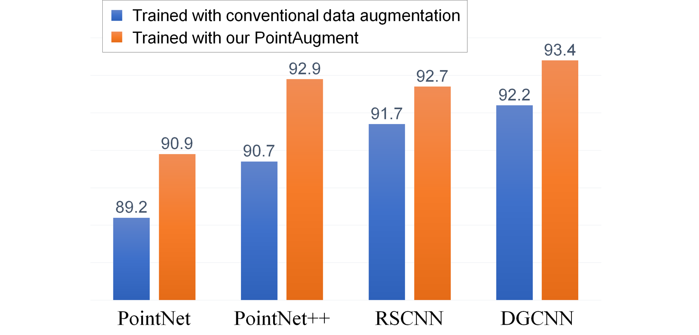
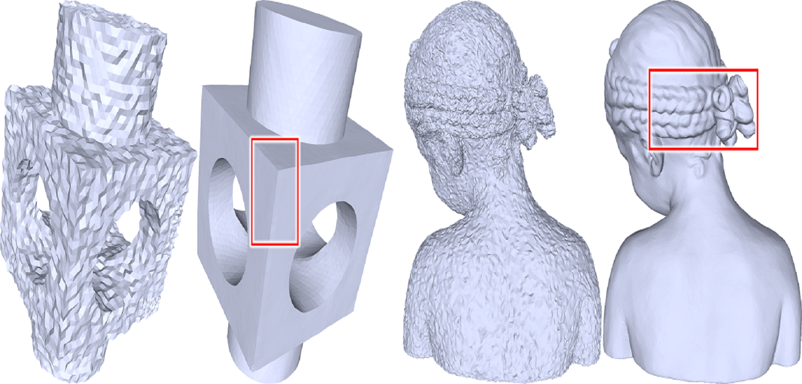

News
[03/2021] One paper conditionally accepted to SIGGRAPH 2021 (first author).
[02/2021] One paper accepted to CVPR 2021.
[02/2020] One paper accepted to CVPR 2020.
[07/2019] One paper accepted to ICCV 2019.
|
|
Ruihui LiPh.D. Candidate, The Chinese University of Hong Kongruihuili.lee at gmail dot com I am currently a final year Ph.D. student in the Department of Computer Science and Engineering, The Chinese University of Hong Kong (CUHK), supervised by Prof. Chi-Wing Fu. Before that, I received the B.Eng. and M. S. degree from the College of Computer Science and Electronic Engineering, Hunan University (HNU) in 2014 and 2017, respectively. My research focuses on point cloud processing, computer vision, and deep learning. [CV] [Github] [Google Scholar] [Twitter] |
[03/2021] One paper conditionally accepted to SIGGRAPH 2021 (first author).
[02/2021] One paper accepted to CVPR 2021.
[02/2020] One paper accepted to CVPR 2020.
[07/2019] One paper accepted to ICCV 2019.
|
---
conditionally accepted to SIGGRAPH 2021
|
|

|
Point Cloud Upsampling via Disentangled Refinement
IEEE Conference on Computer Vision and Pattern Recognition (CVPR). 2021
|
|  |
PointAugment: an Auto-Augmentation Framework for Point Cloud Classification
IEEE Conference on Computer Vision and Pattern Recognition (CVPR 2020). (Oral)
|
|  |
DNF-Net: a Deep Normal Filtering Network for Mesh Denoising
IEEE Transactions on Visualization and Computer Graphics (IEEE TVCG), 2020.
|
|
PU-GAN: a Point Cloud Upsampling Adversarial Network
IEEE International Conference on Computer Vision (ICCV), pp. 7203-7212, 2019.
|
Non-Local Part-Aware Point Cloud Denoising
Chao Huang^, Ruihui Li^, Xianzhi Li, and Chi-Wing Fu. (^ joint first authors)
Tech report, arXiv, March, 2020.
A Rotation-Invariant Framework for Deep Point Cloud Analysis
Xianzhi Li, Ruihui Li, Guangyong Chen, Chi-Wing Fu, Daniel Cohen-Or and Pheng-Ann Heng.
Tech report, arXiv, March, 2020.